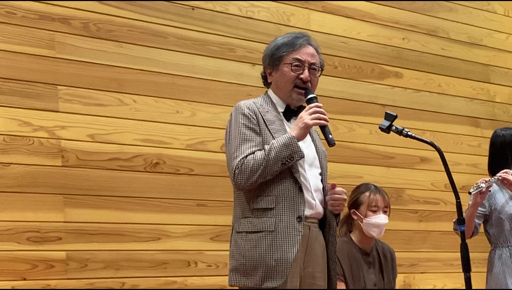
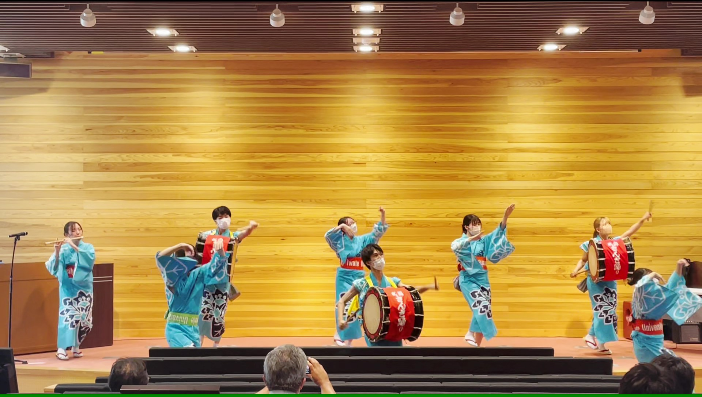
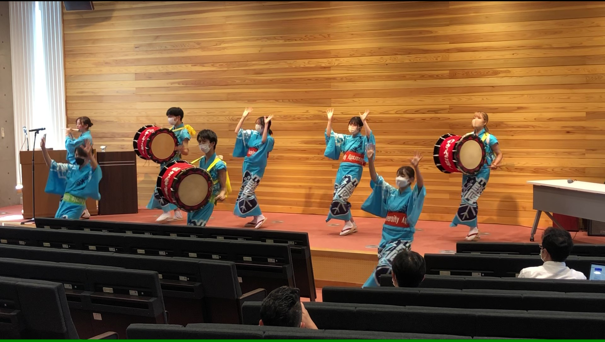
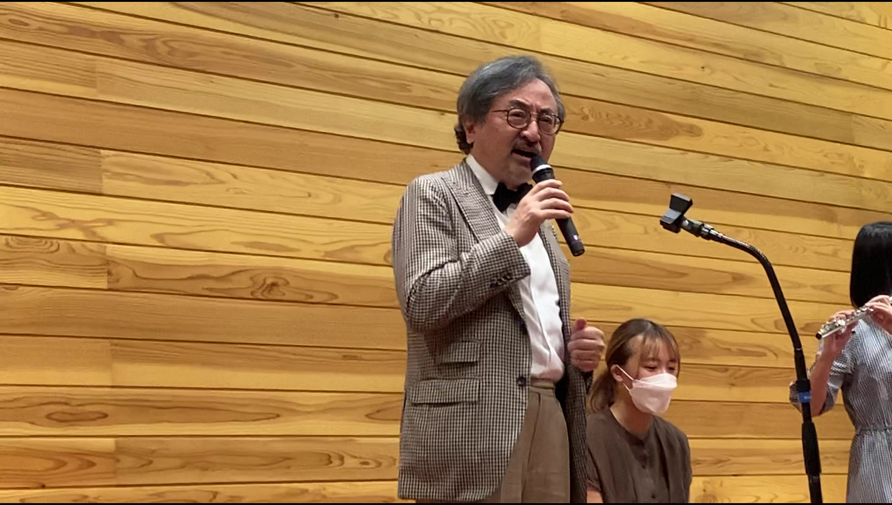
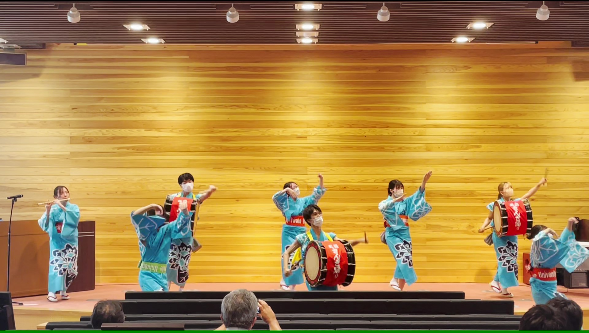
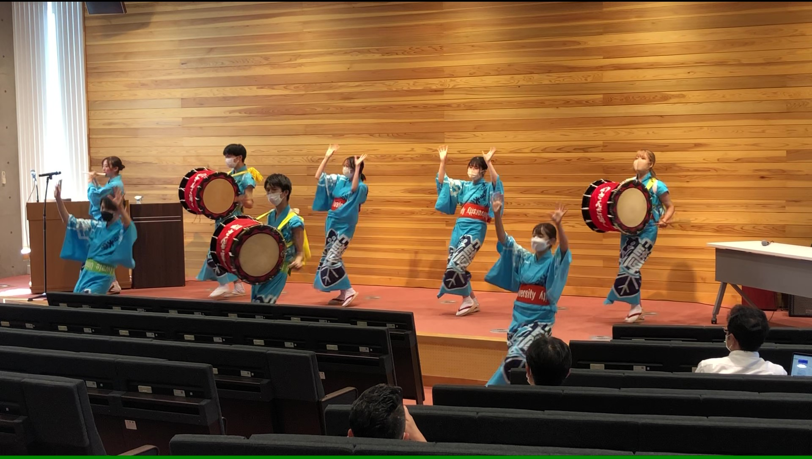

第１回 夏のシンポジウム
日 時：令和４年 ８月１９日（金）
場 所：岩手大学 復興祈念銀河ホール & オンライン
共 催：岩手大学 理工学部・農学部
世話人：尾﨑 拓（岩手大学 理工学部）
伊東 健（弘前大学大学院医学研究科）
開会の挨拶（9:55-10:00）
伊東 健
セッションI（10:00 ‒ 12:00）
10:00 ‒ 10:30
宮崎 雅雄（岩手大学農学部）
「古くて新しい天然物化学の課題 ネコのマタタビ反応の謎を解く」
10:30 ‒ 11:00
李 昌一（神奈川歯科大学 ）
「血管病態生理学のレドックス制御に関連するESR エビデンスの展開」
11:00 ‒ 11:30
七里 元督（産業技術総合研究所）
「ダイゼインによる脂質酸化酵素5-リポキシゲナーゼの活性化を介したインフルエンザウイル
ス増殖抑制」
11:30 ‒ 12:00
紙 健次郎（ヒューマン・メタボローム・テクノロジーズ株式会社）
「CE-FTMS による次世代メタボロミクス基盤の構築とその解析事例」
ランチ（12:00-13:00）
13:00-13:20
特別企画（盛岡さんさ踊り + a）
セッションII(13:20-15:20)
13:20-13:50
冨田 浩史（岩手大学理工学部）
「オプトジェネティクス技術を利用した網膜再生と保護」
13:50-14:20
板倉 正典（東京大学農学生命科学研究科）
「自然修飾タンパク質受容体としてのヒストンと生体恒常性維持における役割」
14:20-14:50
塩田 剛太郎（株式会社メディプラス製薬）
「メディプラス製薬の歩みと今後の展望」
14:50-15:20
中島 良太（帝人株式会社）
「本ワサビ末エキス（6-メチルスルフィニルヘキシルイソチオシアネート：6-MSITC）による
酸化ストレス抑制効果とその臨床研究報告」
休憩（15:20-15:30）
セッションIII（ミトコンドリアおよび鉄代謝）(15:30-17:30)
15:30-16:00
諸石 寿朗（熊本大学 大学院生命科学研究部）
「タンパク質分解による鉄代謝恒常性の維持機構とその破綻」
16:00-16:30
古山 和道（岩手医科大学）
「ミトコンドリアシャペロンCLPX による代謝制御機構について」
16:30-17:00
田村 康（山形大学理学部）
「オルガネラ間コンタクトを介したリン脂質輸送機構」
17:00-17:30
田中 敦（山形大学医学部）
「ミトコンドリアを中心に観た細胞内鉄動態の解析と疾患研究への応用」
休憩（17:30-17:40）
17:40-18:40
特別講演
柳 茂（学習院大学理学部）
「ミトコンドリア膜上のユビキチン修飾の役割と病態」
閉会の挨拶（18:40-18:45）
尾﨑 拓
感染拡大防止対策について
お問い合わせ
第１回 夏のシンポジウム 実行委員
尾﨑 拓（岩手大学 理工学部）
tozaki@iwate-u.ac.jp

 




